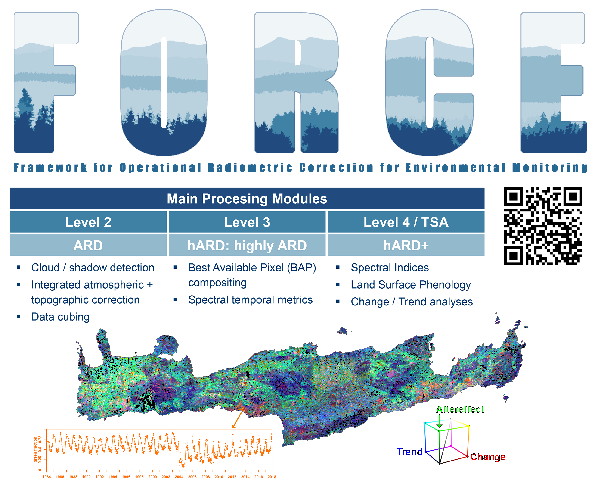

3 Corrections
3.1 Summary
3.1.1 Correction
3.1.1.1 Geometric Correction
Causes: view angle(off-nadir, off directly down), topography, wind, rotation of the earth
Solution:
- Steps:
Find Ground Control Points(GCP) to match known points in the incorrect image and a reference correct dataset.
Then use a transformation algorithm to model the actual coordinates, like linear regression with distorted x or y as the dependent or independent.
Later, plot these and minimize the RMSE, whereas the lower RMSE the better model fits.
Last, resample the final raster because the value of pixels in raster might shift slightly, and the common resample data including Nearest Neighbor, Linear, Cubic and Cubic Spline.
- Two Methods:
Forward Mapping: Input to output
There would be points in the incorrect map falling outside the boundary of the correct map.
Backward Mapping: Output to input
This method completely avoids problems with gaps and overlaps.
3.1.1.2 Atmospheric Correction
Causes: atmospheric scattering and topographic attenuation
Tips: There are both necessary and unnecessary atmospheric corrections. We only need to do the necessary atmospheric corrections.
Solutions:
- Types:
Relative correction: Avoid the evaluation of atmospheric components of any kind(“Living Textbook | Relative Atmospheric Correction | by ITC, University of Twente,” n.d.).
Normalize intensities of different bands within a single image
Normalize intensities of bands from many dates to one date
Dark object subtraction or histogram adjustment
Pseudo-invariant Features(PIFS)
Absolute correction:
- Requirements: an atmospheric model, local atmospheric visibility and image altitude
- Change digital brightness values into scaled surface reflectance
Empirical line correction
Steps:
- Using a filed spectrometer,which require measurements at the same time as the satellite overpass
- Then use this measurements in linear regression against the satellite data raw digital number.
3.1.1.3 Orthorectification Correction
Causes: a systematic sensor and platform-induced geometry errors, which introduce terrain distortions when the sensor is not pointing directly at the Nadir location of the sensor.
Solution:
Cosine correction
Minnaert correction
Statistical Empirical correction
C Correction (advancing the Cosine)
3.1.1.4 Radiometric Calibration
Causes: sensors capture images brightness and distributed as a Digital Number(DN), which allows for efficient storage but has no units.
Solution:
DN to spectral radiance
3.1.2 Data Joining and Enhancement
3.1.2.1 Data Joining
Mosaicking:
seamless image: the final image, images feathered together
seamline: the dividing line between the base image and ‘other’ or second image
feathering: give similar brightness values of the two images.
3.1.2.2 Image Enhancement
Contrast enhancement: Images usually do not have good contrast. The methods: min-max, percentage linear and standard deviation, piecewise linear contrast stretch
Other enhancements:
Ratio
Filtering
Low pass or low frequency (averages the surrounding pixels)
High pass or high frequency - enhance local variations
PCA(Principal Component Analysis): Transform multi-spectral data into uncorrelated and smaller dataset, and reduce future computation
Texture: Spatial variation of gray values
fusion: Fusing data from multiple sensors / sources together
3.2 Application
As the influx of earth observation data enable use to closely monitor the environmental status at various scales(Pekel et al. 2016), the usage complexity and volume of data would be easily overwhelming(Frantz 2019). Therefore, the earth observation data are in urgent to be pre-processed for immediate analysis, which is
<<<<<<< HEAD Analysis Ready Data
4 : mostly used to describe radiometrically and geometrically consistent data that include cloud and other poor-quality observation flags for filtering data prior to analysis(Dwyer et al. 2018)
- Analysis Ready Data
-
mostly used to describe radiometrically and geometrically consistent data that include cloud and other poor-quality observation flags for filtering data prior to analysis(Dwyer et al. 2018)
However, when the ARD dataset was still not common to us all, we still needed to do corrections with remote sensing images. Otherwise, there would be significant impacts on our research. And below are the applications and operations of corrections in research.
In Hadjimitsis et al. (2010)’s work, to evaluate the impacts of atmospheric correction on the agricultural application(detailly, the calculation of vegetation indices), they finished the geometric correction, radiometric correction at Yeroskipou area in Paphos district (the south-west area of Cyprus).
Firstly, the images were geometrically corrected and geo-referenced to the World Geodetic System’84 (WGS 84/UTM) projection system using a suitable number of identifiable ground control points. Then they used a second order polynomial transformation and kept the RMSE smaller than 1 pixel.
As for radiometric correction, as usual, they converted Digital Numbers(DN) to units of radiance by using standard calibration values. Then, the darkest pixel atmospheric correction method (also termed as histogram minimum method) was applied. To calibrate the at-satellite radiance values in each spectral band for the study area, a dark target (e.g. a water dam) was carefully chosen. The average radiance value of the dark target was then subtracted from each at-satellite radiance value in every spectral band.
Finally, they tested the impact of atmospheric effects on (a) the calculation of vegetation indices; (b) comparison between at-satellite reflectance and spectro-radiometric values; and (c) the calculation of real daily evapotranspiration.
Ten Landsat TM/ETM+ images were utilized to assess the impact of atmospheric correction on the accuracy of vegetation indices and evapotranspiration estimates. The results indicate that atmospheric effects must be taken into account for the calculation of DVI, NDVI, SAVI, and MSAVI indices.
Even the availability of ARD improve efficieny for research, some processing is still necessary. It is stated that the variability in data availability across space and time, along with partial incompleteness caused by clouds, acquisition orbits, and observation scenarios, necessitates the use of specialized algorithms or an additional round of processing. This is required to generate spatial completeness and temporal equidistance, ensuring that the data is ready for analysis(Frantz 2019). Therefore, it is cruicial to have highly analysis ready data(hARD) and hARD+, see as figure below
